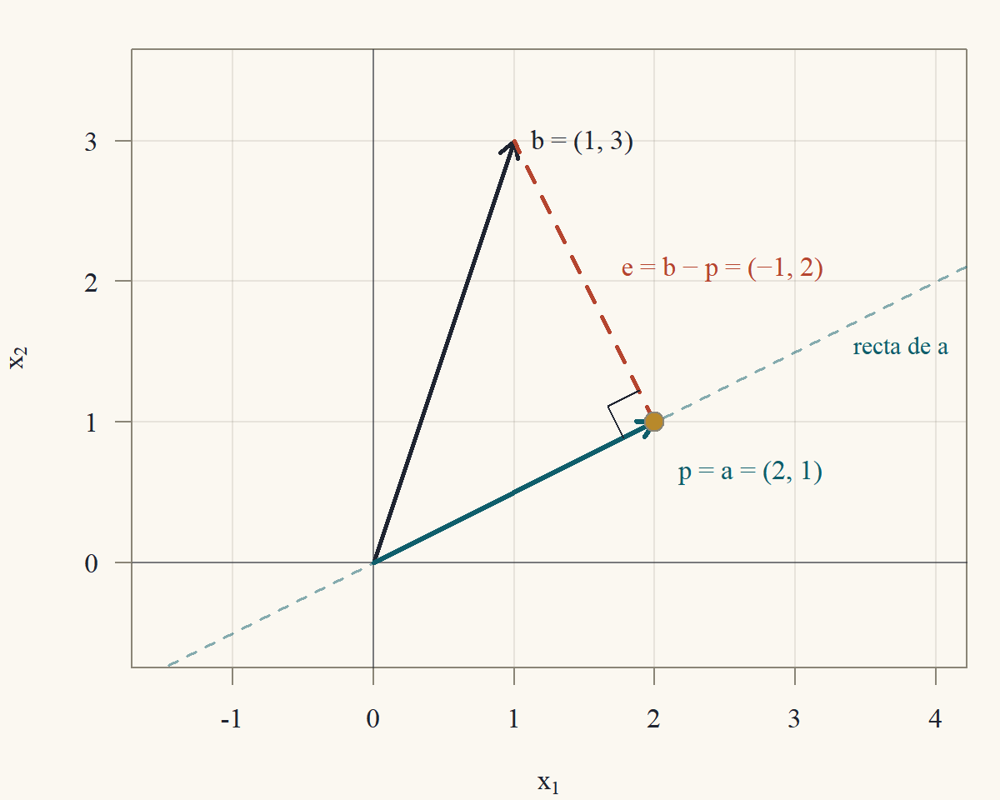
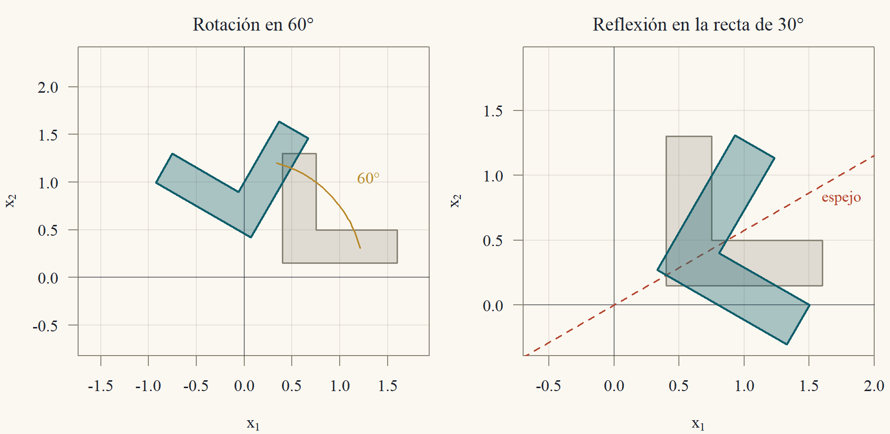
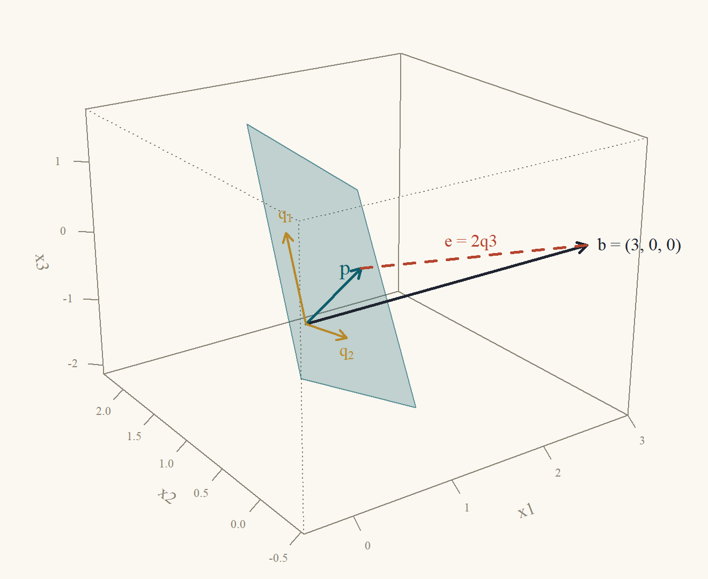
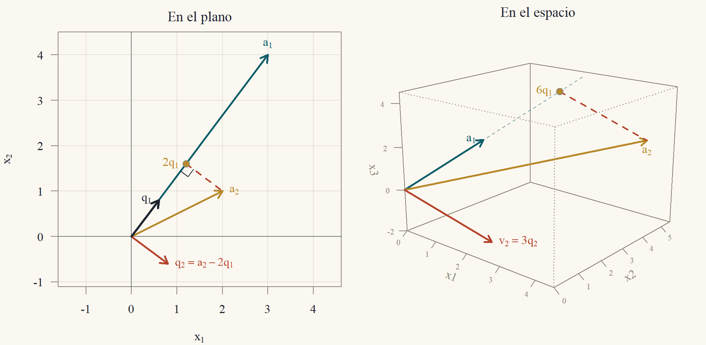
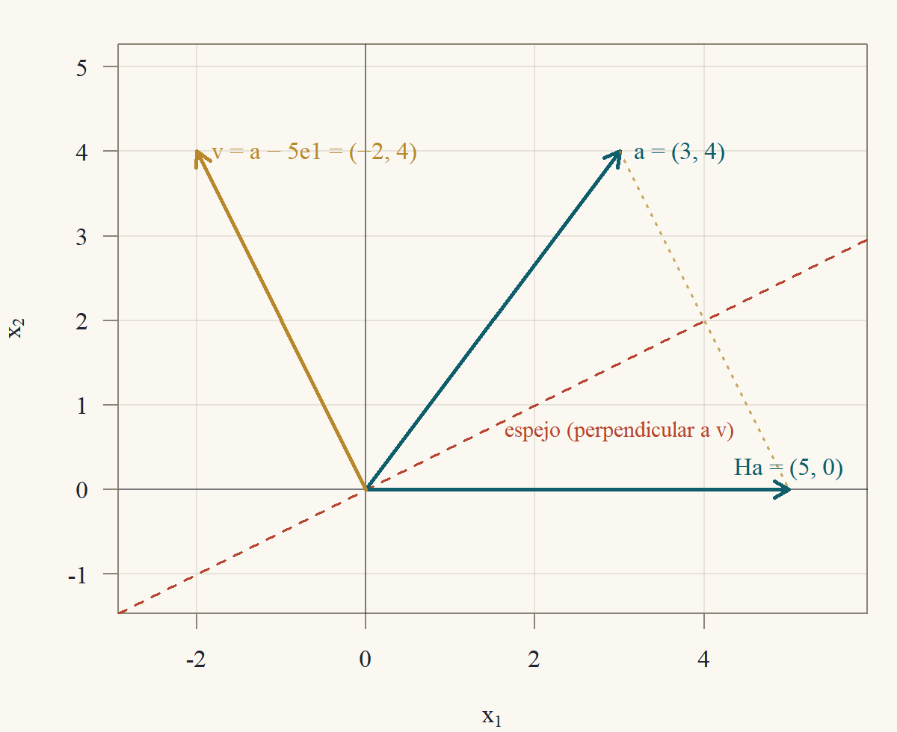

Clase 5 · Ortogonalidad y factorización QR
Longitudes, ángulos y bases que no se tuercen
1 Por qué importan los ángulos rectos
En las clases anteriores las matrices se trataron con eliminación: sumar múltiplos de filas, intercambiar filas. Esa aritmética no ve longitudes ni ángulos. Esta clase incorpora la geometría a través del producto punto, y muestra que las bases formadas por vectores perpendiculares de largo uno tienen tres ventajas:
- Las coordenadas se calculan sin resolver sistemas. En una base cualquiera, encontrar las coordenadas de un vector exige resolver \(Ax = b\); en una base ortonormal, cada coordenada es un producto punto.
- Las matrices ortogonales no deforman. Conservan longitudes y ángulos: son las rotaciones y reflexiones de la mecánica y la computación gráfica.
- Los cálculos son estables. Multiplicar por una matriz ortogonal no amplifica los errores de redondeo. Por eso la factorización \(A = QR\) (una matriz ortogonal por una triangular) es la base de los métodos numéricos de mínimos cuadrados (Clase 6) y de valores propios.
2 Producto interno, longitud y ángulo
Definición 1 (Producto interno y norma) El producto interno (o producto punto) de \(x,y\in\mathbb{R}^n\) es \[ x\cdot y = x'y = x_1y_1 + x_2y_2 + \dots + x_ny_n. \] La norma (longitud) de \(x\) es \(\|x\| = \sqrt{x\cdot x} = \sqrt{x_1^2 + \dots + x_n^2}\). Un vector de norma \(1\) es unitario. Dos vectores son ortogonales (\(x\perp y\)) si \(x\cdot y = 0\).
En \(\mathbb{R}^2\) y \(\mathbb{R}^3\), la norma es la longitud de la flecha por el teorema de Pitágoras: el vector \((3,4)\) mide \(\sqrt{9 + 16} = 5\), y \((1,2,2)\) mide \(\sqrt{1 + 4 + 4} = 3\) (en el espacio se aplica Pitágoras dos veces: primero en el plano \(x_1x_2\), \(\sqrt{1 + 4}\), y luego con la altura, \(\sqrt{(1 + 4) + 4}\)). Directamente de la definición, como suma de productos de componentes, el producto interno es:
- simétrico: \(x\cdot y = y\cdot x\);
- lineal en cada argumento: \((cx + dz)\cdot y = c\,(x\cdot y) + d\,(z\cdot y)\);
- positivo: \(x\cdot x = \sum x_i^2\ge0\), y vale \(0\) solo si todas las \(x_i\) son cero, es decir si \(x = 0\).
De la linealidad sale la regla para desarrollar el cuadrado de una suma, que usaremos varias veces: \[ \|x + y\|^2 = (x + y)\cdot(x + y) = x\cdot x + x\cdot y + y\cdot x + y\cdot y = \|x\|^2 + 2\,x\cdot y + \|y\|^2. \]
Teorema 1 (Pitágoras) \(x\perp y\) si y solo si \(\|x + y\|^2 = \|x\|^2 + \|y\|^2\).
Demostración. Por el desarrollo anterior, \(\|x + y\|^2 - \|x\|^2 - \|y\|^2 = 2\,x\cdot y\), que es cero exactamente cuando \(x\cdot y = 0\).
Teorema 2 (Desigualdad de Cauchy–Schwarz) Para todo \(x,y\in\mathbb{R}^n\): \(|x\cdot y|\le\|x\|\,\|y\|\). La igualdad vale si y solo si uno de los dos es múltiplo del otro.
Si \(y = 0\), ambos lados son cero. Si no, miro la función \(t\mapsto\|x - ty\|^2\ge0\), que es un polinomio de grado 2 en \(t\). Es mínima en algún \(t^*\), y el valor mínimo no negativo da la desigualdad. El mínimo vale cero solo si \(x = t^*y\).
Demostración. Caso \(y = 0\). Entonces \(x\cdot y = 0\) y \(\|y\| = 0\): la desigualdad es \(0\le0\), con igualdad, y \(y = 0\cdot x\) es múltiplo de \(x\).
Caso \(y\ne0\). Para cualquier número \(t\), por la positividad y el desarrollo del cuadrado (con \(-ty\) en lugar de \(y\)), \[ 0\le\|x - ty\|^2 = \|x\|^2 - 2t\,(x\cdot y) + t^2\|y\|^2. \] Elegimos \(t = \dfrac{x\cdot y}{\|y\|^2}\) (el vértice de la parábola). Reemplazando, \[ \begin{aligned} 0&\le\|x\|^2 - 2\frac{(x\cdot y)^2}{\|y\|^2} + \frac{(x\cdot y)^2}{\|y\|^4}\|y\|^2\\ &= \|x\|^2 - \frac{(x\cdot y)^2}{\|y\|^2}. \end{aligned} \] Multiplicando por \(\|y\|^2>0\): \((x\cdot y)^2\le\|x\|^2\|y\|^2\), y sacando raíz, \(|x\cdot y|\le\|x\|\|y\|\).
Igualdad. Si \(x = cy\), \(|x\cdot y| = |c|\,\|y\|^2 = \|x\|\,\|y\|\). Recíprocamente, si hay igualdad con \(y\ne0\), la última línea vale cero, así que \(\|x - ty\|^2 = 0\) y, por la positividad, \(x = ty\).
Corolario 1 (Desigualdad triangular) \(\|x + y\|\le\|x\| + \|y\|\).
Demostración. \(\|x + y\|^2 = \|x\|^2 + 2\,x\cdot y + \|y\|^2\le\|x\|^2 + 2\|x\|\|y\| + \|y\|^2 = (\|x\| + \|y\|)^2\), usando \(x\cdot y\le|x\cdot y|\le\|x\|\|y\|\) (Teorema 2). Como ambos lados son no negativos, se puede sacar raíz.
Por Cauchy–Schwarz, si \(x,y\ne0\), el cociente \(\dfrac{x\cdot y}{\|x\|\|y\|}\) está entre \(-1\) y \(1\), y es el coseno de un único ángulo \(\theta\in[0,\pi]\).
Proposición 1 (El ángulo entre dos vectores) Si \(x,y\ne0\) en \(\mathbb{R}^2\) o \(\mathbb{R}^3\) forman el ángulo geométrico \(\theta\), entonces \[ \cos\theta = \frac{x\cdot y}{\|x\|\,\|y\|}. \] En particular, \(x\perp y\) (producto interno cero) significa \(\theta = 90°\).
Demostración. Los vectores \(x\), \(y\) y \(x - y\) forman un triángulo (de lados \(\|x\|\), \(\|y\|\) y \(\|x - y\|\), con ángulo \(\theta\) entre los dos primeros). El teorema del coseno de la geometría elemental dice \[ \|x - y\|^2 = \|x\|^2 + \|y\|^2 - 2\|x\|\|y\|\cos\theta. \] Por otra parte, desarrollando el cuadrado con \(-y\): \(\|x - y\|^2 = \|x\|^2 - 2\,x\cdot y + \|y\|^2\). Igualando las dos expresiones, \(-2\,x\cdot y = -2\|x\|\|y\|\cos\theta\), y despejando se obtiene la fórmula.
En \(\mathbb{R}^n\) con \(n>3\) no hay ángulo “geométrico” previo, y la fórmula se usa como definición del ángulo; es la idea detrás de la correlación en estadística.
Ejemplo 1 (Ángulos en el plano y en el espacio) En el plano: \(x = (3,4)\), \(y = (4,3)\). \(x\cdot y = 12 + 12 = 24\) y \(\|x\| = \|y\| = 5\): \(\cos\theta = \tfrac{24}{25} = 0{,}96\) y \(\theta\approx16{,}26°\). Cauchy–Schwarz: \(24\le5\cdot5 = 25\), casi una igualdad porque los vectores son casi paralelos.
En el espacio: \(x = (1,2,2)\), \(y = (3,3,0)\). \(x\cdot y = 3 + 6 + 0 = 9\), \(\|x\| = 3\) y \(\|y\| = \sqrt{18} = 3\sqrt2\): \(\cos\theta = \tfrac{9}{9\sqrt2} = \tfrac1{\sqrt2}\) y \(\theta = 45°\). En cambio \((1,2,2)\cdot(2,1,-2) = 2 + 2 - 4 = 0\): esos dos son perpendiculares, y por Pitágoras \(\|(3,3,0)\|^2 = 18 = 9 + 9 = \|(1,2,2)\|^2 + \|(2,1,-2)\|^2\), porque \((3,3,0) = (1,2,2) + (2,1,-2)\).
3 Proyección sobre una recta
¿Cuál es el punto de la recta generada por \(a\ne0\) más cercano a \(b\)? La respuesta es el pie de la perpendicular (Figura 1).
Teorema 3 (Proyección sobre una recta) Sea \(a\ne0\). El punto de la recta \(\{ta: t\in\mathbb{R}\}\) más cercano a \(b\) es \[ p = \frac{a\cdot b}{a\cdot a}\,a, \] el error \(e = b - p\) es ortogonal a \(a\), y \(p = Pb\) con la matriz de proyección \(P = \dfrac{aa'}{a'a}\), que cumple \(P' = P\) y \(P^2 = P\).
Pido que el error sea perpendicular: \(a\cdot(b - ta) = 0\) da \(t = a\cdot b/a\cdot a\). Que ese punto es el más cercano sale de Pitágoras: cualquier otro punto de la recta está a la distancia de \(p\) “más” un tramo perpendicular. La matriz sale de reordenar \(\frac{a'b}{a'a}a = a\frac{a'b}{a'a} = \frac{aa'}{a'a}b\).
Demostración. Ortogonalidad. Con \(\hat t = \dfrac{a\cdot b}{a\cdot a}\) y \(p = \hat ta\): \[ a\cdot e = a\cdot(b - \hat ta) = a\cdot b - \hat t\,(a\cdot a) = a\cdot b - a\cdot b = 0. \] Mínima distancia. Sea \(ta\) un punto cualquiera de la recta. Entonces \(b - ta = (b - p) + (p - ta) = e + (\hat t - t)a\). Como \(e\perp a\), también \(e\perp(\hat t - t)a\), y por Pitágoras (Teorema 1) \[ \|b - ta\|^2 = \|e\|^2 + (\hat t - t)^2\|a\|^2\ge\|e\|^2, \] con igualdad solo si \(t = \hat t\). El punto más cercano es \(p\), y es único.
Matriz. \(a\cdot b = a'b\) es un número, así que puede ir a la derecha de \(a\): \(p = a\,\dfrac{a'b}{a'a} = \dfrac{aa'}{a'a}\,b = Pb\). Simetría: \((aa')' = (a')'a' = aa'\). Idempotencia: \[ P^2 = \frac{aa'}{a'a}\cdot\frac{aa'}{a'a} = \frac{a\,(a'a)\,a'}{(a'a)^2} = \frac{aa'}{a'a} = P, \] porque \(a'a\) es un número que se cancela. (Geométricamente: proyectar algo que ya está en la recta no lo mueve.)

Ejemplo 2 (Proyecciones en el plano y en el espacio) En el plano (Figura 1): \(a = (2,1)\), \(b = (1,3)\). \(a\cdot b = 2 + 3 = 5\) y \(a\cdot a = 4 + 1 = 5\): \(p = 1\cdot a = (2,1)\) y \(e = (1 - 2,\ 3 - 1) = (-1,2)\). Comprobación: \(a\cdot e = -2 + 2 = 0\) ✓. La matriz de proyección es \[ P = \frac15\begin{pmatrix}2\\1\end{pmatrix}\begin{pmatrix}2&1\end{pmatrix} = \frac15\begin{pmatrix}4&2\\2&1\end{pmatrix},\qquad Pb = \frac15\begin{pmatrix}4 + 6\\2 + 3\end{pmatrix} = \begin{pmatrix}2\\1\end{pmatrix}. \] En el espacio: \(a = (1,1,1)\), \(b = (1,2,6)\). \(a\cdot b = 9\) y \(a\cdot a = 3\): \(p = 3a = (3,3,3)\) y \(e = (-2,-1,3)\), con \(a\cdot e = -2 - 1 + 3 = 0\) ✓. Proyectar sobre la diagonal \((1,1,1)\) reemplaza cada componente por el promedio de las tres: \((1 + 2 + 6)/3 = 3\). Es lo que hace el ajuste de una constante por mínimos cuadrados (Clase 6).
4 Bases ortonormales y matrices ortogonales
Definición 2 (Vectores ortonormales y matriz ortogonal) Los vectores \(q_1,\dots,q_k\) son ortonormales si \(q_i\cdot q_j = 0\) para \(i\ne j\) y \(q_i\cdot q_i = 1\). Si son las columnas de \(Q\), esto se escribe \(Q'Q = I\) (la entrada \((i,j)\) de \(Q'Q\) es \(q_i'q_j\)). Una matriz cuadrada con \(Q'Q = I\) se llama matriz ortogonal.
(El nombre es histórico: una “matriz ortogonal” tiene columnas ortonormales.)
Teorema 4 (Propiedades de los vectores ortonormales)
- Vectores ortonormales son linealmente independientes.
- Si \(q_1,\dots,q_n\) es una base ortonormal de \(\mathbb{R}^n\), todo \(x\) se escribe \(x = (q_1\cdot x)\,q_1 + \dots + (q_n\cdot x)\,q_n\).
- Si \(Q\) es ortogonal (\(n\times n\)): \(Q^{-1} = Q'\), también \(QQ' = I\) (las filas son ortonormales), y \(\det Q = \pm1\).
- Si \(Q\) tiene columnas ortonormales, conserva productos internos y normas: \((Qx)\cdot(Qy) = x\cdot y\) y \(\|Qx\| = \|x\|\). Por lo tanto conserva ángulos.
- El producto de dos matrices ortogonales es ortogonal.
Demostración. Parte 1. Supongamos \(c_1q_1 + \dots + c_kq_k = 0\). Multiplicamos por \(q_j\) (producto interno) y usamos la linealidad: \(c_1(q_j\cdot q_1) + \dots + c_k(q_j\cdot q_k) = 0\). Todos los términos son cero salvo el \(j\)-ésimo, que es \(c_j\cdot1\). Entonces \(c_j = 0\), y esto vale para cada \(j\).
Parte 2. Como es base, \(x = c_1q_1 + \dots + c_nq_n\) para ciertos \(c_i\). Multiplicando por \(q_j\), igual que en la parte 1, \(q_j\cdot x = c_j\).
Parte 3. \(Q'Q = I\) dice que \(Q'\) es inversa de \(Q\) por la izquierda; para matrices cuadradas basta un lado (Clase 2), así que \(Q^{-1} = Q'\) y entonces también \(QQ' = I\). Por la Clase 4, \(\det(Q')\det Q = \det(Q'Q) = 1\) y \(\det Q' = \det Q\), así que \((\det Q)^2 = 1\).
Parte 4. \((Qx)\cdot(Qy) = (Qx)'(Qy) = x'Q'Qy = x'Iy = x\cdot y\). Con \(y = x\): \(\|Qx\|^2 = \|x\|^2\). Los ángulos se calculan con productos internos y normas (Proposición 1), así que también se conservan.
Parte 5. Si \(Q_1'Q_1 = I\) y \(Q_2'Q_2 = I\), entonces \((Q_1Q_2)'(Q_1Q_2) = Q_2'Q_1'Q_1Q_2 = Q_2'IQ_2 = I\).
La parte 2 es la ventaja principal: en una base cualquiera, las coordenadas de \(x\) se obtienen resolviendo un sistema \(Ac = x\); en una base ortonormal basta con \(c = Q'x\), \(n\) productos internos.
Ejemplo 3 (Una base ortonormal de \(\mathbb{R}^3\)) Sean \[ q_1 = \tfrac13(1,2,2),\qquad q_2 = \tfrac13(2,1,-2),\qquad q_3 = \tfrac13(2,-2,1). \] Cada uno tiene norma \(\tfrac13\sqrt{1 + 4 + 4} = 1\), y los productos internos son \[ \begin{aligned} q_1\cdot q_2 &= \tfrac19(2 + 2 - 4) = 0,\qquad q_1\cdot q_3 = \tfrac19(2 - 4 + 2) = 0,\\ q_2\cdot q_3 &= \tfrac19(4 - 2 - 2) = 0. \end{aligned} \] Las coordenadas de \(x = (3,3,0)\) son \(q_1\cdot x = \tfrac13(3 + 6) = 3\), \(q_2\cdot x = \tfrac13(6 + 3) = 3\) y \(q_3\cdot x = \tfrac13(6 - 6) = 0\). Comprobación: \(3q_1 + 3q_2 + 0q_3 = (1,2,2) + (2,1,-2) = (3,3,0)\) ✓. La matriz \(Q = \tfrac13\begin{pmatrix}1&2&2\\2&1&-2\\2&-2&1\end{pmatrix}\) con esas columnas es ortogonal; por la regla de Sarrus, \(\det\begin{pmatrix}1&2&2\\2&1&-2\\2&-2&1\end{pmatrix} = (1 - 8 - 8) - (4 + 4 + 4) = -27\), y \(\det Q = -27/27 = -1\).
4.1 Rotaciones y reflexiones del plano
Las matrices ortogonales \(2\times2\) son exactamente las rotaciones y las reflexiones (Ejercicio 5.5). La rotación en el ángulo \(\theta\) (antihorario) y la reflexión en la recta por el origen que forma el ángulo \(\varphi\) con el eje \(x_1\) son \[ R(\theta) = \begin{pmatrix}\cos\theta&-\sin\theta\\\sin\theta&\cos\theta\end{pmatrix},\qquad H(\varphi) = \begin{pmatrix}\cos2\varphi&\sin2\varphi\\\sin2\varphi&-\cos2\varphi\end{pmatrix}. \] Las columnas de \(R(\theta)\) son las imágenes de \(e_1\) y \(e_2\): \(e_1 = (1,0)\) gira hasta \((\cos\theta,\sin\theta)\), y \(e_2 = (0,1)\) gira hasta \((-\sin\theta,\cos\theta)\). Son unitarias (\(\cos^2 + \sin^2 = 1\)) y ortogonales (\(-\cos\theta\sin\theta + \sin\theta\cos\theta = 0\)), y \(\det R(\theta) = \cos^2\theta + \sin^2\theta = 1\).
Para \(H(\varphi)\), sea \(u = (\cos\varphi,\sin\varphi)\) la dirección del espejo y \(n = (-\sin\varphi,\cos\varphi)\) la perpendicular. Usando \(\cos(2\varphi - \varphi) = \cos2\varphi\cos\varphi + \sin2\varphi\sin\varphi\) y \(\sin(2\varphi - \varphi) = \sin2\varphi\cos\varphi - \cos2\varphi\sin\varphi\): \[ H(\varphi)u = \begin{pmatrix}\cos2\varphi\cos\varphi + \sin2\varphi\sin\varphi\\\sin2\varphi\cos\varphi - \cos2\varphi\sin\varphi\end{pmatrix} = \begin{pmatrix}\cos\varphi\\\sin\varphi\end{pmatrix} = u, \] \[ H(\varphi)n = \begin{pmatrix}-\cos2\varphi\sin\varphi + \sin2\varphi\cos\varphi\\-\sin2\varphi\sin\varphi - \cos2\varphi\cos\varphi\end{pmatrix} = \begin{pmatrix}\sin\varphi\\-\cos\varphi\end{pmatrix} = -n. \] El espejo deja fija su recta y da vuelta la dirección perpendicular. Su determinante es \(-\cos^22\varphi - \sin^22\varphi = -1\): una reflexión invierte la orientación (Figura 2), como se vio en la Clase 4.

Componer dos rotaciones suma los ángulos. Multiplicando y usando las fórmulas del coseno y el seno de una suma, \[ \begin{aligned} R(\alpha)R(\beta) &= \begin{pmatrix}\cos\alpha\cos\beta - \sin\alpha\sin\beta&-\cos\alpha\sin\beta - \sin\alpha\cos\beta\\\sin\alpha\cos\beta + \cos\alpha\sin\beta&-\sin\alpha\sin\beta + \cos\alpha\cos\beta\end{pmatrix}\\ &= \begin{pmatrix}\cos(\alpha + \beta)&-\sin(\alpha + \beta)\\\sin(\alpha + \beta)&\cos(\alpha + \beta)\end{pmatrix} = R(\alpha + \beta). \end{aligned} \] En particular \(R(\theta)^{-1} = R(-\theta) = R(\theta)'\), como predice la parte 3 del Teorema 4.
4.2 Rotaciones en el espacio
En \(\mathbb{R}^3\), las rotaciones en el ángulo \(\theta\) alrededor de los ejes \(x_3\) y \(x_1\) son \[ R_3(\theta) = \begin{pmatrix}\cos\theta&-\sin\theta&0\\\sin\theta&\cos\theta&0\\0&0&1\end{pmatrix},\qquad R_1(\theta) = \begin{pmatrix}1&0&0\\0&\cos\theta&-\sin\theta\\0&\sin\theta&\cos\theta\end{pmatrix}. \] Cada una es una rotación del plano en dos coordenadas y deja fija la tercera (el eje). Son ortogonales con determinante \(1\) (expandiendo por la fila o columna del eje, queda \(\det R(\theta) = 1\)).
Ejemplo 4 (Las rotaciones del espacio no conmutan) Con \(\theta = 90°\) (\(\cos = 0\), \(\sin = 1\)): \[ R_3 = \begin{pmatrix}0&-1&0\\1&0&0\\0&0&1\end{pmatrix},\qquad R_1 = \begin{pmatrix}1&0&0\\0&0&-1\\0&1&0\end{pmatrix}. \] Primero girar alrededor de \(x_3\) y después alrededor de \(x_1\) es la matriz \(R_1R_3\). Fila por columna: \[ R_1R_3 = \begin{pmatrix}0&-1&0\\0&0&-1\\1&0&0\end{pmatrix},\qquad R_3R_1 = \begin{pmatrix}0&0&1\\1&0&0\\0&1&0\end{pmatrix}. \] Por ejemplo, la fila 2 de \(R_1R_3\) es \((0,0,-1)\) por las columnas de \(R_3\): \((0,0,-1)\cdot(0,1,0) = 0\), \((0,0,-1)\cdot(-1,0,0) = 0\) y \((0,0,-1)\cdot(0,0,1) = -1\). Los resultados son distintos: \(R_1R_3\) lleva \(e_1\) a \(e_3\) (primero \(e_1\to e_2\) por \(R_3\), después \(e_2\to e_3\) por \(R_1\)), mientras \(R_3R_1\) lleva \(e_1\) a \(e_2\) (primero \(R_1\) deja fijo \(e_1\), después \(R_3\) lo lleva a \(e_2\)). Las rotaciones del plano conmutan (\(R(\alpha)R(\beta) = R(\alpha + \beta) = R(\beta)R(\alpha)\)), las del espacio no.
Toda matriz ortogonal \(3\times3\) con determinante \(1\) es una rotación alrededor de algún eje (teorema de Euler); la demostración usa valores propios y está en la Clase 7.
4.3 Proyección sobre un plano
La proyección sobre un plano (o, en general, sobre un subespacio) es fácil cuando se conoce una base ortonormal del plano: se proyecta sobre cada vector de la base y se suma. La Clase 6 trata el caso de una base cualquiera.
Teorema 5 (Proyección con una base ortonormal) Sea \(V\) el subespacio generado por los vectores ortonormales \(q_1,\dots,q_k\) (las columnas de \(Q\), \(n\times k\)). El punto de \(V\) más cercano a \(b\) es \[ p = (q_1\cdot b)\,q_1 + \dots + (q_k\cdot b)\,q_k = QQ'b, \] y el error \(e = b - p\) es ortogonal a todo vector de \(V\).
Demostración. Ortogonalidad. Para cada \(j\), usando \(q_j\cdot q_i = 0\) si \(i\ne j\) y \(q_j\cdot q_j = 1\): \[ q_j\cdot e = q_j\cdot b - \sum_{i = 1}^k(q_i\cdot b)(q_j\cdot q_i) = q_j\cdot b - q_j\cdot b = 0. \] Todo \(v\in V\) es \(v = \sum c_iq_i\), y por linealidad \(v\cdot e = \sum c_i\,(q_i\cdot e) = 0\).
Mínima distancia. Si \(v\in V\), entonces \(b - v = e + (p - v)\) con \(p - v\in V\), que es ortogonal a \(e\). Por Pitágoras, \(\|b - v\|^2 = \|e\|^2 + \|p - v\|^2\ge\|e\|^2\), con igualdad solo si \(v = p\).
Forma matricial. \(Q'b\) es el vector de los \(q_i\cdot b\), y \(Q(Q'b)\) es la combinación de las columnas de \(Q\) con esos coeficientes.
Ejemplo 5 (Proyección sobre un plano del espacio) Proyectemos \(b = (3,0,0)\) sobre el plano generado por \(q_1 = \tfrac13(1,2,2)\) y \(q_2 = \tfrac13(2,1,-2)\) del Ejemplo 3 (Figura 3). Los coeficientes son \(q_1\cdot b = \tfrac13\cdot3 = 1\) y \(q_2\cdot b = \tfrac13\cdot6 = 2\): \[ p = 1\cdot\tfrac13(1,2,2) + 2\cdot\tfrac13(2,1,-2) = \tfrac13(5,4,-2), \] \[ e = b - p = (3,0,0) - \tfrac13(5,4,-2) = \tfrac13(4,-4,2) = 2q_3. \] El error es un múltiplo de \(q_3\), el vector perpendicular al plano, como debía. La distancia de \(b\) al plano es \(\|e\| = 2\), y Pitágoras se cumple: \(\|b\|^2 = 9 = \|p\|^2 + \|e\|^2 = (1 + 4) + 4\) (las normas de \(p\) y \(e\) se calculan en la base ortonormal: \(\|p\|^2 = 1^2 + 2^2\)).

5 Gram–Schmidt
Dadas columnas independientes \(a_1,\dots,a_n\), el procedimiento de Gram–Schmidt construye vectores ortonormales que generan lo mismo. La idea es una sola: a cada \(a_j\) se le resta su proyección sobre los \(q\) anteriores (Teorema 5), y lo que queda, que es perpendicular a todos ellos, se divide por su norma.
Entrada: \(a_1,\dots,a_n\in\mathbb{R}^m\) independientes. Para \(j = 1,\dots,n\):
- Para \(i = 1,\dots,j - 1\): \(r_{ij} = q_i\cdot a_j\).
- \(v_j = a_j - r_{1j}q_1 - \dots - r_{j-1,j}q_{j-1}\).
- \(r_{jj} = \|v_j\|\) y \(q_j = v_j/r_{jj}\).
Costo: la columna \(j\) necesita \(j - 1\) productos internos y \(j - 1\) restas de vectores de largo \(m\), unas \(4m(j - 1)\) operaciones; en total \(\approx2mn^2\). Falla (división por cero) si las columnas son dependientes: \(v_j = 0\). Y numéricamente se degrada si son casi dependientes (sección ★).
Teorema 6 (Gram–Schmidt funciona) Si \(a_1,\dots,a_n\) son independientes, el algoritmo nunca divide por cero, los \(q_1,\dots,q_n\) son ortonormales y, para cada \(j\), \(\operatorname{span}\{q_1,\dots,q_j\} = \operatorname{span}\{a_1,\dots,a_j\}\).
Demostración. Por inducción en \(j\).
Paso \(j = 1\). \(a_1\ne0\) (un conjunto independiente no contiene el cero), así que \(r_{11} = \|a_1\|>0\) y \(q_1 = a_1/\|a_1\|\) es unitario y genera la misma recta que \(a_1\).
Paso \(j\), suponiendo que vale hasta \(j - 1\).
- \(v_j\ne0\). Si fuera \(v_j = 0\), entonces \(a_j = r_{1j}q_1 + \dots + r_{j-1,j}q_{j-1}\) estaría en \(\operatorname{span}\{q_1,\dots,q_{j-1}\} = \operatorname{span}\{a_1,\dots,a_{j-1}\}\) (hipótesis de inducción), y \(a_j\) sería combinación de los anteriores, contra la independencia. Entonces \(r_{jj} = \|v_j\|>0\) y \(q_j\) está bien definido y es unitario.
- Ortogonalidad. Para \(k<j\), por linealidad y porque \(q_1,\dots,q_{j-1}\) son ortonormales, \[ q_k\cdot v_j = q_k\cdot a_j - \sum_{i = 1}^{j-1}r_{ij}\,(q_k\cdot q_i) = q_k\cdot a_j - r_{kj} = 0, \] ya que \(r_{kj} = q_k\cdot a_j\). Dividiendo por \(r_{jj}\), \(q_k\cdot q_j = 0\).
- Mismo espacio. Despejando, \(a_j = r_{1j}q_1 + \dots + r_{j-1,j}q_{j-1} + r_{jj}q_j\), así que \(a_j\in\operatorname{span}\{q_1,\dots,q_j\}\); con la hipótesis, \(\operatorname{span}\{a_1,\dots,a_j\}\subseteq\operatorname{span}\{q_1,\dots,q_j\}\). Al revés, \(q_j = (a_j - \sum_{i<j}r_{ij}q_i)/r_{jj}\) es combinación de \(a_j\) y de \(q_1,\dots,q_{j-1}\), que están en \(\operatorname{span}\{a_1,\dots,a_{j-1}\}\). Los dos espacios coinciden.
Ejemplo 6 (Gram–Schmidt en el plano y en el espacio) En el plano (Figura 4, izquierda): \(a_1 = (3,4)\), \(a_2 = (2,1)\).
- \(r_{11} = \|a_1\| = 5\), \(q_1 = \tfrac15(3,4)\).
- \(r_{12} = q_1\cdot a_2 = \tfrac15(6 + 4) = 2\). \(v_2 = a_2 - 2q_1 = (2,1) - (\tfrac65,\tfrac85) = (\tfrac45,-\tfrac35)\), \(r_{22} = \sqrt{\tfrac{16}{25} + \tfrac9{25}} = 1\) y \(q_2 = \tfrac15(4,-3)\).
Comprobación: \(q_1\cdot q_2 = \tfrac1{25}(12 - 12) = 0\) ✓.
En el espacio (Figura 4, derecha): \(a_1 = (1,2,2)\), \(a_2 = (4,5,2)\), \(a_3 = (6,3,3)\).
- \(r_{11} = \sqrt{1 + 4 + 4} = 3\), \(q_1 = \tfrac13(1,2,2)\).
- \(r_{12} = q_1\cdot a_2 = \tfrac13(4 + 10 + 4) = 6\). \(v_2 = a_2 - 6q_1 = (4,5,2) - (2,4,4) = (2,1,-2)\), \(r_{22} = 3\), \(q_2 = \tfrac13(2,1,-2)\).
- \(r_{13} = q_1\cdot a_3 = \tfrac13(6 + 6 + 6) = 6\) y \(r_{23} = q_2\cdot a_3 = \tfrac13(12 + 3 - 6) = 3\). Entonces \[ v_3 = a_3 - 6q_1 - 3q_2 = (6,3,3) - (2,4,4) - (2,1,-2) = (2,-2,1), \] \(r_{33} = 3\) y \(q_3 = \tfrac13(2,-2,1)\).
Se obtuvo la base ortonormal del Ejemplo 3.

6 La factorización QR
Gram–Schmidt, escrito como matrices, es una factorización. El paso 2 del algoritmo despejado dice \[ a_j = r_{1j}q_1 + r_{2j}q_2 + \dots + r_{jj}q_j, \] es decir, la columna \(j\) de \(A\) es \(Q\) por la columna \((r_{1j},\dots,r_{jj},0,\dots,0)'\). Esa es la columna \(j\) de una matriz triangular superior \(R\).
Teorema 7 (Factorización QR) Si \(A\) (\(m\times n\)) tiene columnas independientes, entonces \(A = QR\), con \(Q\) (\(m\times n\)) de columnas ortonormales y \(R\) (\(n\times n\)) triangular superior con diagonal positiva. Esa factorización es única. Además \(R = Q'A\).
Demostración. Existencia. Gram–Schmidt (Teorema 6) da \(q_1,\dots,q_n\) ortonormales y números \(r_{ij}\) (\(i\le j\)) con \(r_{jj}>0\) y \(a_j = \sum_{i\le j}r_{ij}q_i\). Poniendo \(r_{ij} = 0\) para \(i>j\), esto es \(A = QR\) columna por columna. Multiplicando por \(Q'\) a la izquierda, \(Q'A = Q'QR = R\).
Unicidad. Supongamos \(Q_1R_1 = Q_2R_2\) con ambas factorizaciones del tipo descrito.
- \(R_1\) es invertible (triangular con diagonal positiva; su determinante, el producto de la diagonal, es positivo). Entonces \(Q_1 = Q_2T\) con \(T = R_2R_1^{-1}\).
- \(T\) es triangular superior con diagonal positiva. El producto de triangulares superiores es triangular superior, y su diagonal es el producto de las diagonales (la entrada \((i,i)\) de \(UV\) es \(\sum_ku_{ik}v_{ki}\), y solo \(k = i\) evita un cero, porque \(u_{ik} = 0\) si \(k<i\) y \(v_{ki} = 0\) si \(k>i\)). La inversa de \(R_1\) es triangular superior (Clase 2, sección ★), y de \(R_1R_1^{-1} = I\) se sigue que su diagonal es \(1/r_{ii}>0\). Entonces la diagonal de \(T\) tiene entradas \(r^{(2)}_{ii}/r^{(1)}_{ii}>0\).
- \(I = Q_1'Q_1 = T'Q_2'Q_2T = T'T\). Entonces \(T' = T^{-1}\).
- \(T'\) es triangular inferior y \(T^{-1}\) es triangular superior; como son iguales, \(T\) es diagonal. Con \(T'T = I\), cada \(t_{ii}^2 = 1\), y como \(t_{ii}>0\), \(t_{ii} = 1\). Luego \(T = I\), \(Q_1 = Q_2\) y \(R_2 = R_1\).
Ejemplo 7 (QR de una matriz \(2\times2\) y de una \(3\times3\)) Del Ejemplo 6: \[ \begin{pmatrix}3&2\\4&1\end{pmatrix} = \underbrace{\frac15\begin{pmatrix}3&4\\4&-3\end{pmatrix}}_{Q}\underbrace{\begin{pmatrix}5&2\\0&1\end{pmatrix}}_{R}, \] \[ \underbrace{\begin{pmatrix}1&4&6\\2&5&3\\2&2&3\end{pmatrix}}_{A} = \underbrace{\frac13\begin{pmatrix}1&2&2\\2&1&-2\\2&-2&1\end{pmatrix}}_{Q}\underbrace{\begin{pmatrix}3&6&6\\0&3&3\\0&0&3\end{pmatrix}}_{R}. \] Comprobación de la segunda columna de \(A\): \(Q\) por \((6,3,0)'\) es \(6q_1 + 3q_2 = (2,4,4) + (2,1,-2) = (4,5,2)\) ✓. De paso, \(\det A = \det Q\,\det R = (-1)\cdot27 = -27\) (Clase 4).
Resolver \(Ax = b\) con QR. Si \(A\) es cuadrada e invertible, \(QRx = b\) equivale (multiplicando por \(Q' = Q^{-1}\)) a \[ Rx = Q'b, \] un sistema triangular que se resuelve hacia atrás. Con la matriz \(3\times3\) anterior y \(b = (11,10,7)\): \(Q'b = \big(\tfrac13(11 + 20 + 14),\ \tfrac13(22 + 10 - 14),\ \tfrac13(22 - 20 + 7)\big) = (15,6,3)\). Hacia atrás: \(3x_3 = 3\) da \(x_3 = 1\); \(3x_2 + 3\cdot1 = 6\) da \(x_2 = 1\); \(3x_1 + 6\cdot1 + 6\cdot1 = 15\) da \(x_1 = 1\). La solución es \((1,1,1)\), y en efecto \(A(1,1,1)' = (11,10,7)\) ✓. Esto cuesta más que LU, pero la Clase 6 muestra que, cuando \(A\) es rectangular, QR es la manera estable de resolver mínimos cuadrados.
6.1 Gram–Schmidt modificado
Hay una variante que da exactamente los mismos resultados en aritmética exacta y mejores en el computador: en vez de calcular todos los \(r_{ij}\) con el \(a_j\) original, se va restando una proyección a la vez y cada coeficiente se calcula con el vector ya corregido.
Para \(j = 1,\dots,n\):
- \(v\leftarrow a_j\).
- Para \(i = 1,\dots,j - 1\): \(r_{ij} = q_i\cdot v\) y luego \(v\leftarrow v - r_{ij}q_i\).
- \(r_{jj} = \|v\|\) y \(q_j = v/r_{jj}\).
Costo: el mismo, \(\approx2mn^2\). Diferencia con el clásico: en el paso 2 se usa \(v\) (con las proyecciones anteriores ya restadas) en lugar de \(a_j\).
En aritmética exacta los coeficientes coinciden: después de restar \(r_{1j}q_1,\dots,r_{i-1,j}q_{i-1}\), \[ q_i\cdot\Big(a_j - \sum_{k<i}r_{kj}q_k\Big) = q_i\cdot a_j - \sum_{k<i}r_{kj}\,(q_i\cdot q_k) = q_i\cdot a_j, \] porque \(q_i\cdot q_k = 0\) para \(k<i\). Pero en el computador los \(q\) calculados no son exactamente ortogonales, ese término no es exactamente cero, y la diferencia puede ser enorme (sección ★).
7 Reflexiones de Householder
Gram–Schmidt ortogonaliza \(A\) con operaciones triangulares (\(A = QR\) se lee \(AR^{-1} = Q\)). Householder hace lo contrario: triangulariza \(A\) con operaciones ortogonales, multiplicándola a la izquierda por reflexiones que van creando ceros debajo de la diagonal, como la eliminación gaussiana, pero sin alterar longitudes.
Definición 3 (Reflexión de Householder) Para \(v\ne0\), la reflexión de Householder es \[ H = I - \frac{2\,vv'}{v'v}. \]
Proposición 2 (Propiedades de la reflexión)
- \(H\) es simétrica, ortogonal, y \(H^2 = I\).
- \(Hv = -v\), y \(Hw = w\) para todo \(w\perp v\): es la reflexión en el plano (o recta) perpendicular a \(v\).
- Si \(\|a\| = \|c\|\) y \(a\ne c\), con \(v = a - c\) se tiene \(Ha = c\).
Demostración. Abreviamos \(P = vv'/(v'v)\), la proyección sobre la recta de \(v\) (Teorema 3), con \(P' = P\) y \(P^2 = P\). Entonces \(H = I - 2P\).
Parte 1. \(H' = I - 2P' = I - 2P = H\). Y \(H'H = H^2 = (I - 2P)(I - 2P) = I - 2P - 2P + 4P^2 = I - 4P + 4P = I\).
Parte 2. \(Pv = v\,(v'v)/(v'v) = v\), así que \(Hv = v - 2v = -v\). Si \(w\perp v\), \(Pw = v\,(v'w)/(v'v) = 0\), así que \(Hw = w\).
Parte 3. Calculamos los dos números que aparecen en \(Ha = a - 2v\,\dfrac{v'a}{v'v}\). Usando \(c'c = a'a\): \[ v'v = (a - c)'(a - c) = a'a - 2c'a + c'c = 2\,(a'a - c'a), \] \[ v'a = (a - c)'a = a'a - c'a. \] Entonces \(2\,\dfrac{v'a}{v'v} = 1\) y \(Ha = a - v = a - (a - c) = c\).
Para crear ceros en la primera columna \(a\) de una matriz, se toma \(c = \|a\|e_1\), que tiene la misma norma que \(a\) y ceros debajo de la primera componente: \(v = a - \|a\|e_1\) (Figura 5).

Ejemplo 8 (Una reflexión en el plano y una en el espacio) En el plano: \(a = (3,4)\), \(\|a\| = 5\), \(v = (3 - 5,\ 4) = (-2,4)\) y \(v'v = 20\): \[ H = I - \frac{2}{20}\begin{pmatrix}4&-8\\-8&16\end{pmatrix} = \begin{pmatrix}1 - 0{,}4&0{,}8\\0{,}8&1 - 1{,}6\end{pmatrix} = \frac15\begin{pmatrix}3&4\\4&-3\end{pmatrix}, \] y \(Ha = \tfrac15(9 + 16,\ 12 - 12) = (5,0)\) ✓.
En el espacio: \(a = (1,2,2)\), \(\|a\| = 3\), \(v = (1 - 3,\ 2,\ 2) = (-2,2,2)\) y \(v'v = 12\). Como \(vv' = \begin{pmatrix}4&-4&-4\\-4&4&4\\-4&4&4\end{pmatrix}\), \[ H = I - \frac{2}{12}vv' = \begin{pmatrix}1 - \frac23&\frac23&\frac23\\\frac23&1 - \frac23&-\frac23\\\frac23&-\frac23&1 - \frac23\end{pmatrix} = \frac13\begin{pmatrix}1&2&2\\2&1&-2\\2&-2&1\end{pmatrix}. \] Es la matriz \(Q\) del Ejemplo 7. Como es simétrica y ortogonal, \(H = H' = H^{-1}\), y \(HA = Q^{-1}QR = R\): para esa matriz \(A\), una sola reflexión la deja triangular. Lo usual es necesitar una reflexión por columna, como en el ejemplo siguiente.
Para \(k = 1,\dots,n\) (con \(A\) de tamaño \(m\times n\)):
- \(a\) = la parte de la columna \(k\) desde la fila \(k\) hacia abajo (un vector de largo \(m - k + 1\)).
- \(v = a - \|a\|e_1\) y \(\tilde H_k = I - 2vv'/v'v\) (de tamaño \(m - k + 1\)).
- Aplicar \(\tilde H_k\) a las filas \(k,\dots,m\) de la matriz (no se tocan las filas de arriba ni los ceros ya creados). Equivale a multiplicar por \(H_k = \begin{pmatrix}I_{k-1}&0\\0&\tilde H_k\end{pmatrix}\).
Al final, \(H_n\cdots H_1A = R\) y \(A = QR\) con \(Q = H_1H_2\cdots H_n\) (cada \(H_k\) es su propia inversa). Si alguna \(a\) ya tiene ceros debajo de su primera componente, se omite ese paso. Costo: \(\approx2mn^2 - \tfrac23n^3\); para \(m = n\), \(\tfrac43n^3\). Detalle práctico: se usa \(v = a + \operatorname{signo}(a_1)\|a\|e_1\) para no restar dos números casi iguales cuando \(a\) ya apunta casi en la dirección de \(e_1\); el \(r_{kk}\) resultante puede ser negativo, lo que se corrige cambiando el signo de la fila de \(R\) y de la columna de \(Q\).
Ejemplo 9 (QR de una matriz \(3\times3\) con dos reflexiones) \[ A = \begin{pmatrix}2&5&0\\1&0&5\\2&-2&-1\end{pmatrix}. \] Paso 1. \(a = (2,1,2)\), \(\|a\| = 3\), \(v = (-1,1,2)\), \(v'v = 6\). Con \(vv' = \begin{pmatrix}1&-1&-2\\-1&1&2\\-2&2&4\end{pmatrix}\), \(H_1 = I - \tfrac13vv' = \tfrac13\begin{pmatrix}2&1&2\\1&2&-2\\2&-2&-1\end{pmatrix}\). Aplicado a las columnas de \(A\):
- \(H_1(2,1,2)' = \tfrac13(4 + 1 + 4,\ 2 + 2 - 4,\ 4 - 2 - 2) = (3,0,0)\);
- \(H_1(5,0,-2)' = \tfrac13(10 - 4,\ 5 + 4,\ 10 + 2) = (2,3,4)\);
- \(H_1(0,5,-1)' = \tfrac13(5 - 2,\ 10 + 2,\ -10 + 1) = (1,4,-3)\).
\[ H_1A = \begin{pmatrix}3&2&1\\0&3&4\\0&4&-3\end{pmatrix}. \] Paso 2. La parte de la columna 2 desde la fila 2 es \(a = (3,4)\): es el ejemplo del plano, \(\tilde H_2 = \tfrac15\begin{pmatrix}3&4\\4&-3\end{pmatrix}\), que lleva \((3,4)\) a \((5,0)\) y \((4,-3)\) a \(\tfrac15(12 - 12,\ 16 + 9) = (0,5)\). La fila 1 no cambia: \[ R = H_2H_1A = \begin{pmatrix}3&2&1\\0&5&0\\0&0&5\end{pmatrix}. \] Paso 3. La columna 3 desde la fila 3 es el número \(5\): no hay nada que anular.
Entonces \(A = QR\) con \(Q = H_1H_2\). Y \(\det A = \det H_1\det H_2\det R = (-1)(-1)\cdot75 = 75\), porque cada reflexión tiene determinante \(-1\).
8 ★ Para ir más allá: cuando Gram–Schmidt pierde la ortogonalidad
En el computador cada operación se redondea a unas 16 cifras significativas: el épsilon de la máquina es \(u\approx1{,}1\times10^{-16}\), y \(1 + \delta\) se redondea a \(1\) si \(|\delta|<u\). Con vectores casi paralelos, Gram–Schmidt clásico puede entregar “\(q\)” que distan mucho de ser ortogonales. Un ejemplo en \(\mathbb{R}^3\) lo muestra con cuentas a mano.
Sea \(\varepsilon = 10^{-8}\), de modo que \(\varepsilon^2 = 10^{-16}<u\) y el computador redondea \(1 + \varepsilon^2\) a \(1\). Tomamos \[ a_1 = \begin{pmatrix}1\\\varepsilon\\0\end{pmatrix},\qquad a_2 = \begin{pmatrix}1\\0\\\varepsilon\end{pmatrix},\qquad a_3 = \begin{pmatrix}1\\0\\0\end{pmatrix}, \] que son independientes (el determinante de la matriz con esas columnas, expandiendo por la primera columna, es \(1\cdot(0\cdot0 - \varepsilon\cdot0) - \varepsilon\cdot(1\cdot0 - 1\cdot\varepsilon) + 0 = \varepsilon^2\ne0\)), pero casi paralelos: los tres están a distancia del orden de \(\varepsilon\) de \(e_1\).
Lo que calcula el computador, paso a paso.
- \(\|a_1\| = \sqrt{1 + \varepsilon^2}\) se redondea a \(1\): \(q_1 = (1,\varepsilon,0)\).
- \(r_{12} = q_1\cdot a_2 = 1\) y \(v_2 = a_2 - q_1 = (0,-\varepsilon,\varepsilon)\), con norma \(\varepsilon\sqrt2\): \(q_2 = \tfrac1{\sqrt2}(0,-1,1)\).
- Clásico: \(r_{13} = q_1\cdot a_3 = 1\) y \(r_{23} = q_2\cdot a_3 = 0\), así que \(v_3 = a_3 - q_1 - 0\cdot q_2 = (0,-\varepsilon,0)\) y \(q_3 = (0,-1,0)\).
- Modificado: \(v = a_3 - q_1 = (0,-\varepsilon,0)\); ahora \(r_{23} = q_2\cdot v = \tfrac{\varepsilon}{\sqrt2}\) (no \(0\)) y \[ v\leftarrow(0,-\varepsilon,0) - \tfrac{\varepsilon}{\sqrt2}\cdot\tfrac1{\sqrt2}(0,-1,1) = \big(0,-\tfrac\varepsilon2,-\tfrac\varepsilon2\big), \] con norma \(\tfrac{\varepsilon}{\sqrt2}\), así que \(q_3 = \tfrac1{\sqrt2}(0,-1,-1)\).
Con el clásico, \(q_2\cdot q_3 = \tfrac1{\sqrt2}(0 + 1 + 0)\approx0{,}707\): el ángulo entre \(q_2\) y \(q_3\) es \(45°\), no \(90°\). Con el modificado, \(q_2\cdot q_3 = \tfrac12(0 + 1 - 1) = 0\).
Qué falló. Los \(q_1\) y \(q_2\) calculados no son exactamente ortogonales: \(q_1\cdot q_2 = \tfrac1{\sqrt2}(0 - \varepsilon + 0)\approx-7\times10^{-9}\). El error de redondeo en \(\|a_1\|\) fue minúsculo (de tamaño \(\varepsilon^2\)), pero \(v_2\) es un vector chico (de tamaño \(\varepsilon\)), así que el error relativo creció a \(\varepsilon^2/\varepsilon = \varepsilon\). Después, en el paso 3, el clásico calcula \(r_{23}\) con \(a_3\) original, que es de tamaño \(1\), y resta proyecciones para dejar un \(v_3\) de tamaño \(\varepsilon\): la falta de ortogonalidad \(q_1\cdot q_2\approx\varepsilon\) se divide por \(\|v_3\| = \varepsilon\) y aparece multiplicada por \(1/\varepsilon\) en el resultado. El modificado mide \(r_{23}\) sobre el vector ya corregido y elimina lo que realmente queda en la dirección de \(q_2\).
Al correr los tres métodos en el computador (aritmética de 16 cifras) se obtienen estos productos internos entre los \(q\) calculados:
| \(q_1\cdot q_2\) | \(q_1\cdot q_3\) | \(q_2\cdot q_3\) | |
|---|---|---|---|
| Gram–Schmidt clásico | \(-7\times10^{-9}\) | \(-1\times10^{-8}\) | \(0{,}707\) |
| Gram–Schmidt modificado | \(-7\times10^{-9}\) | \(-7\times10^{-9}\) | \(2\times10^{-16}\) |
| Householder | \(\lesssim10^{-16}\) | \(\lesssim10^{-16}\) | \(\lesssim10^{-16}\) |
El modificado también pierde algo (los \(10^{-9}\) que vienen del primer paso), en proporción a qué tan casi dependientes son las columnas. Householder produce una \(Q\) ortogonal hasta el redondeo siempre, porque \(Q\) es un producto de reflexiones que son ortogonales por construcción. Por eso las bibliotecas numéricas (LAPACK, y la función qr() de R) usan Householder. Otra salida, si se quiere Gram–Schmidt, es reortogonalizar: aplicar el proceso dos veces (Ejercicio 5.7).
Todo lo de esta clase vale en \(\mathbb{R}^n\) con las mismas demostraciones: Cauchy–Schwarz, proyecciones, Gram–Schmidt, QR y Householder. Lo que el curso de Álgebra lineal agrega es la abstracción: un producto interno es cualquier operación simétrica, lineal y positiva, y con ella se mide ortogonalidad en espacios de funciones. Así, Gram–Schmidt aplicado a \(1,t,t^2,\dots\) con \(\int_{-1}^1f(t)g(t)\,dt\) produce los polinomios de Legendre, y las series de Fourier son coordenadas en una base ortonormal de dimensión infinita.
9 Resumen
- \(x\cdot y = x'y\), \(\|x\| = \sqrt{x\cdot x}\). Pitágoras: \(x\perp y\iff\|x + y\|^2 = \|x\|^2 + \|y\|^2\). Cauchy–Schwarz: \(|x\cdot y|\le\|x\|\|y\|\). Ángulo: \(\cos\theta = x\cdot y/(\|x\|\|y\|)\).
- Proyección sobre una recta: \(p = \frac{a\cdot b}{a\cdot a}a = Pb\), \(P = aa'/a'a\), con \(e\perp a\) (Teorema 3). Sobre un subespacio con base ortonormal: \(p = QQ'b\) (Teorema 5).
- Matrices ortogonales (\(Q'Q = I\)): \(Q^{-1} = Q'\), conservan normas y ángulos, \(\det Q = \pm1\). Rotaciones (\(\det = 1\)) y reflexiones (\(\det = -1\)); en el espacio, las rotaciones no conmutan.
- Gram–Schmidt resta proyecciones y normaliza (Teorema 6), y escrito como matrices es \(A = QR\) con \(R\) triangular de diagonal positiva, única (Teorema 7). Para resolver: \(Rx = Q'b\).
- Householder: \(H = I - 2vv'/v'v\) es simétrica, ortogonal y \(H^2 = I\); con \(v = a - \|a\|e_1\), \(Ha = \|a\|e_1\). Aplicando una por columna, \(H_n\cdots H_1A = R\).
- ★ Con columnas casi dependientes, Gram–Schmidt clásico pierde la ortogonalidad; el modificado es mejor y Householder es el estándar.
10 Ejercicios
Ejercicio 5.1. Calcula el ángulo entre (a) \((1,2)\) y \((3,1)\); (b) \((1,1,0)\) y \((1,0,1)\). Verifica Cauchy–Schwarz en ambos casos.
\(x\cdot y = 3 + 2 = 5\), \(\|x\| = \sqrt5\), \(\|y\| = \sqrt{10}\). \(\cos\theta = \dfrac5{\sqrt{50}} = \dfrac5{5\sqrt2} = \dfrac1{\sqrt2}\): \(\theta = 45°\). Cauchy–Schwarz: \(5\le\sqrt{50}\approx7{,}07\) ✓.
\(x\cdot y = 1 + 0 + 0 = 1\), \(\|x\| = \|y\| = \sqrt2\). \(\cos\theta = \tfrac12\): \(\theta = 60°\). Cauchy–Schwarz: \(1\le2\) ✓. (Son dos diagonales de caras adyacentes del cubo unitario; con la diagonal de la tercera cara, \((0,1,1)\), forman un triángulo equilátero de lado \(\sqrt2\), por eso el ángulo es \(60°\).)
Ejercicio 5.2. (a) Proyecta \(b = (3,1)\) sobre la recta de \(a = (1,2)\). (b) Proyecta \(b = (1,1,3)\) sobre la recta de \(a = (1,2,2)\), escribe la matriz de proyección y verifica que \(P^2 = P\) calculando una entrada.
\(a\cdot b = 3 + 2 = 5\), \(a\cdot a = 5\): \(p = (1,2)\), \(e = (2,-1)\), y \(a\cdot e = 2 - 2 = 0\) ✓.
\(a\cdot b = 1 + 2 + 6 = 9\), \(a\cdot a = 9\): \(p = (1,2,2)\), \(e = (0,-1,1)\), y \(a\cdot e = 0 - 2 + 2 = 0\) ✓. La matriz es \[ P = \frac19\begin{pmatrix}1&2&2\\2&4&4\\2&4&4\end{pmatrix}. \] Entrada \((1,1)\) de \(P^2\): fila 1 por columna 1, \(\tfrac1{81}(1\cdot1 + 2\cdot2 + 2\cdot2) = \tfrac9{81} = \tfrac19 = P_{11}\) ✓. (En general, \(P^2 = P\) por el Teorema 3.)
Ejercicio 5.3. Aplica Gram–Schmidt a las columnas de \(A = \begin{pmatrix}4&1\\3&2\end{pmatrix}\) y escribe \(A = QR\).
\(a_1 = (4,3)\): \(r_{11} = 5\), \(q_1 = \tfrac15(4,3)\). \(a_2 = (1,2)\): \(r_{12} = q_1\cdot a_2 = \tfrac15(4 + 6) = 2\); \(v_2 = (1,2) - 2\cdot\tfrac15(4,3) = (1 - \tfrac85,\ 2 - \tfrac65) = (-\tfrac35,\tfrac45)\), con norma \(1\): \(r_{22} = 1\), \(q_2 = \tfrac15(-3,4)\). \[ A = \frac15\begin{pmatrix}4&-3\\3&4\end{pmatrix}\begin{pmatrix}5&2\\0&1\end{pmatrix}. \] Comprobación: segunda columna, \(2q_1 + q_2 = \tfrac15(8 - 3,\ 6 + 4) = (1,2)\) ✓. \(Q\) es la rotación en el ángulo \(\theta\) con \(\cos\theta = \tfrac45\), \(\sin\theta = \tfrac35\).
Ejercicio 5.4. Aplica Gram–Schmidt a las columnas de \(A = \begin{pmatrix}2&4&3\\2&1&-3\\1&-1&0\end{pmatrix}\), escribe \(A = QR\) y usa la factorización para resolver \(Ax = (9,0,0)'\).
\(a_1 = (2,2,1)\): \(r_{11} = \sqrt{4 + 4 + 1} = 3\), \(q_1 = \tfrac13(2,2,1)\).
\(a_2 = (4,1,-1)\): \(r_{12} = \tfrac13(8 + 2 - 1) = 3\); \(v_2 = (4,1,-1) - (2,2,1) = (2,-1,-2)\), \(r_{22} = 3\), \(q_2 = \tfrac13(2,-1,-2)\).
\(a_3 = (3,-3,0)\): \(r_{13} = \tfrac13(6 - 6 + 0) = 0\), \(r_{23} = \tfrac13(6 + 3 + 0) = 3\); \(v_3 = (3,-3,0) - 0\cdot q_1 - (2,-1,-2) = (1,-2,2)\), \(r_{33} = 3\), \(q_3 = \tfrac13(1,-2,2)\). \[ Q = \frac13\begin{pmatrix}2&2&1\\2&-1&-2\\1&-2&2\end{pmatrix},\qquad R = \begin{pmatrix}3&3&0\\0&3&3\\0&0&3\end{pmatrix}. \] Sistema: \(Q'b\) con \(b = (9,0,0)\) es \(\tfrac13(18,\ 18,\ 9) = (6,6,3)\) (las primeras componentes de cada \(q_i\) por \(9\)). \(Rx = (6,6,3)\): \(x_3 = 1\); \(3x_2 + 3 = 6\), \(x_2 = 1\); \(3x_1 + 3 = 6\), \(x_1 = 1\). Comprobación: \(A(1,1,1)' = (2 + 4 + 3,\ 2 + 1 - 3,\ 1 - 1 + 0) = (9,0,0)\) ✓.
Ejercicio 5.5. Demuestra que toda matriz ortogonal \(2\times2\) es una rotación \(R(\theta)\) (si su determinante es \(1\)) o una reflexión \(H(\varphi)\) (si es \(-1\)).
La primera columna \((q_{11},q_{21})\) es unitaria: \(q_{11}^2 + q_{21}^2 = 1\), así que es un punto del círculo unitario y existe \(\theta\) con \((q_{11},q_{21}) = (\cos\theta,\sin\theta)\). La segunda columna es unitaria y perpendicular a la primera. Los vectores perpendiculares a \((\cos\theta,\sin\theta)\) son los múltiplos de \((-\sin\theta,\cos\theta)\) (en el plano, el complemento ortogonal de una recta es una recta), y los unitarios entre ellos son \(\pm(-\sin\theta,\cos\theta)\). Entonces:
- con el signo \(+\): \(Q = \begin{pmatrix}\cos\theta&-\sin\theta\\\sin\theta&\cos\theta\end{pmatrix} = R(\theta)\), con \(\det = 1\);
- con el signo \(-\): \(Q = \begin{pmatrix}\cos\theta&\sin\theta\\\sin\theta&-\cos\theta\end{pmatrix} = H(\theta/2)\), con \(\det = -\cos^2\theta - \sin^2\theta = -1\).
Como el determinante distingue los dos casos, \(\det Q = 1\) da una rotación y \(\det Q = -1\) una reflexión.
Ejercicio 5.6. Construye la reflexión de Householder que lleva \(a = (2,1,2)\) a \((3,0,0)\), verifica que lo hace y que \(H\) es ortogonal (al menos dos productos de columnas), y describe el espejo.
\(\|a\| = 3\), \(v = a - 3e_1 = (-1,1,2)\), \(v'v = 6\). \(vv' = \begin{pmatrix}1&-1&-2\\-1&1&2\\-2&2&4\end{pmatrix}\) y \[ H = I - \frac26vv' = \begin{pmatrix}1 - \frac13&\frac13&\frac23\\\frac13&1 - \frac13&-\frac23\\\frac23&-\frac23&1 - \frac43\end{pmatrix} = \frac13\begin{pmatrix}2&1&2\\1&2&-2\\2&-2&-1\end{pmatrix}. \] \(Ha = \tfrac13(4 + 1 + 4,\ 2 + 2 - 4,\ 4 - 2 - 2) = (3,0,0)\) ✓. Columnas: la primera tiene norma \(\tfrac13\sqrt{4 + 1 + 4} = 1\), y el producto de las dos primeras es \(\tfrac19(2 + 2 - 4) = 0\); el de la primera y la tercera, \(\tfrac19(4 - 2 - 2) = 0\) ✓. El espejo es el plano perpendicular a \(v\), \(-x_1 + x_2 + 2x_3 = 0\): sus puntos quedan fijos. Comprobación con un punto del plano, \(w = (1,1,0)\): \(Hw = \tfrac13(2 + 1,\ 1 + 2,\ 2 - 2) = (1,1,0)\) ✓.
Ejercicio 5.7 ★. (a) Aplica Gram–Schmidt modificado a la matriz del Ejercicio 5.4 y verifica que da los mismos \(r_{ij}\). (b) En el ejemplo de la sección ★, toma el \(v_3 = (0,-\varepsilon,0)\) del método clásico y reortogonalízalo: réstale otra vez sus proyecciones sobre \(q_1\) y \(q_2\) (con la regla de redondeo \(1 + \varepsilon^2\to1\)). ¿Queda \(q_3\) ortogonal a \(q_2\)?
Las columnas 1 y 2 se tratan igual que antes (con \(j = 2\) hay una sola proyección que restar). Columna 3: \(v = (3,-3,0)\); \(r_{13} = q_1\cdot v = 0\) y \(v\leftarrow v - 0\cdot q_1 = (3,-3,0)\); \(r_{23} = q_2\cdot v = \tfrac13(6 + 3) = 3\) y \(v\leftarrow(3,-3,0) - (2,-1,-2) = (1,-2,2)\); \(r_{33} = 3\). Mismos números que el clásico, como garantiza la cuenta del texto (en aritmética exacta coinciden). Aquí incluso es obvio, porque \(r_{13} = 0\) y restar \(0\cdot q_1\) no cambia \(v\).
Con \(v = (0,-\varepsilon,0)\), \(q_1 = (1,\varepsilon,0)\) y \(q_2 = \tfrac1{\sqrt2}(0,-1,1)\):
- \(q_1\cdot v = -\varepsilon^2\), y \(v\leftarrow v + \varepsilon^2q_1 = (\varepsilon^2,\ -\varepsilon + \varepsilon^3,\ 0)\), que se redondea a \((\varepsilon^2,-\varepsilon,0)\) (porque \(\varepsilon - \varepsilon^3 = \varepsilon(1 - \varepsilon^2)\) y \(1 - \varepsilon^2\) se redondea a \(1\));
- \(q_2\cdot v = \tfrac{\varepsilon}{\sqrt2}\), y \(v\leftarrow(\varepsilon^2,-\varepsilon,0) - \tfrac\varepsilon2(0,-1,1) = (\varepsilon^2,\ -\tfrac\varepsilon2,\ -\tfrac\varepsilon2)\).
Normalizando, \(q_3\approx\tfrac1{\sqrt2}(2\varepsilon,-1,-1)\) (la norma es \(\tfrac\varepsilon{\sqrt2}\sqrt{1 + 2\varepsilon^2}\), que se redondea a \(\tfrac\varepsilon{\sqrt2}\)). Entonces \(q_2\cdot q_3 = \tfrac12(0 + 1 - 1) = 0\) ✓ y \(q_1\cdot q_3 = \tfrac1{\sqrt2}(2\varepsilon - \varepsilon) = \tfrac{\varepsilon}{\sqrt2}\approx7\times10^{-9}\), del mismo orden que el error ya presente entre \(q_1\) y \(q_2\). Una segunda pasada recupera la ortogonalidad que el clásico había perdido: “dos veces es suficiente” es la regla práctica.